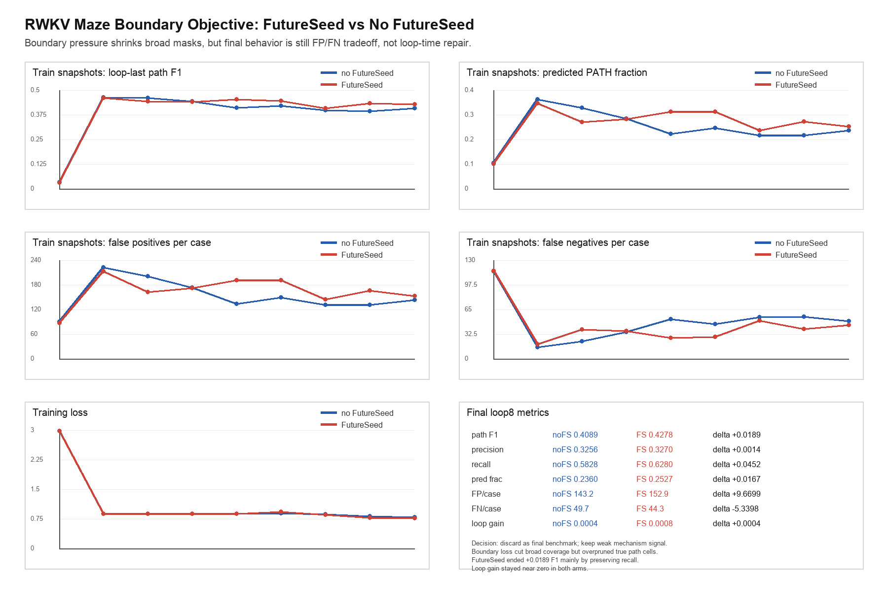
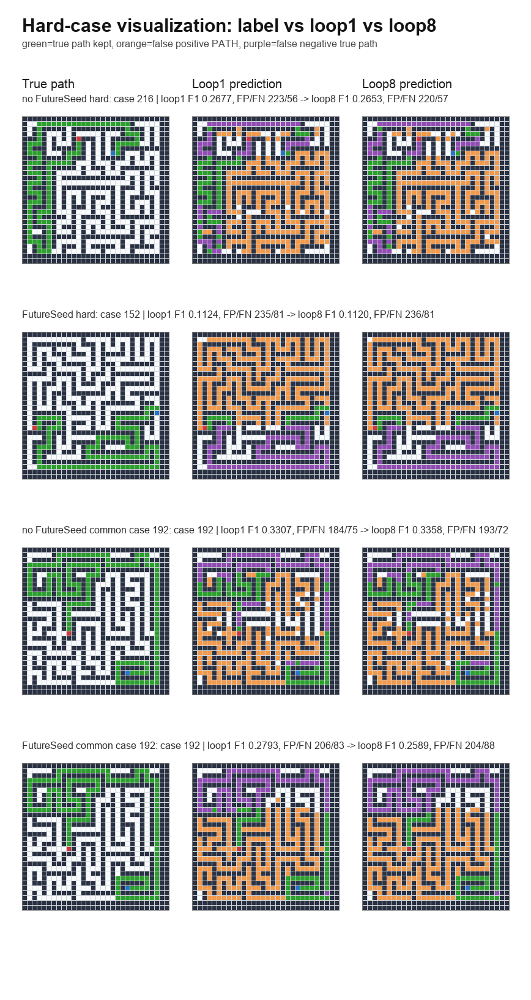

RWKV Maze Boundary Objective: FutureSeed vs No FutureSeed
Decision: discard as final benchmark, keep as weak mechanism signal. The boundary objective makes broad masks costly, but it overprunes. FutureSeed is mildly better under this pressure, while loop correction remains unsolved.
metric
no FutureSeed
FutureSeed
delta
path F1
0.4089
0.4278
+0.0189
precision
0.3256
0.3270
+0.0014
recall
0.5828
0.6280
+0.0452
pred frac
0.2360
0.2527
+0.0167
FP/case
143.2
152.9
+9.6699
FN/case
49.7
44.3
-5.3398
loop gain
0.0004
0.0008
+0.0004
Summary curves

Hard cases

Per-condition interactive case viewers